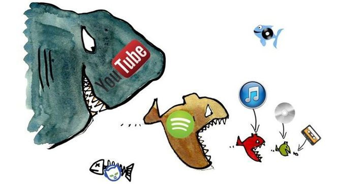

新冠肺炎疫情對高科技、媒體與電信產業的6個影響
5G企業專網需求超出預期 上修專網測試家數
Deloitte原預期2020年全球將有超過100家大型企業開始測試5G企業專網，而更新的預測指出，2020年Q1實際進行測試的企業，已超越預期且費用相對較低，2020年預計上修至超過1,000家。顯示企業在5G專網的部署未受到疫情影響，反而加快發展速度。
無接觸趨勢增加服務型機器人需求
2020年服務型機器人的銷售數量將首次超過工業型機器人，相較2019年增加30%，而工業機器人僅增長10%。隨著無接觸趨勢興起，服務型機器人的銷售成長率上修增加近四成，而工業型機器人則下降10%。售出的服務型機器人超過半數將用於倉庫、物流和醫療垂直系統中，而60%的工業型機器人則用於汽車和電子相關行業。
影片、遊戲等線上串流需求上升
全球CDN加速成長
全球CDN加速成長
疫情使得宅經濟熱潮升溫，影片、遊戲等線上串流需求將增加20%到70%，擴大CDN(Content Delivery Network)的需求。勤業眾信預測，全球CDN市場每年將以30%到40%的速度成長，預計可能達到155億美元，超過原預期的140億美元，帶動相關市場、遊戲與app營收上升。然而，由於經濟遭受重創出現疲軟，相關的支出可能會受到限制。
